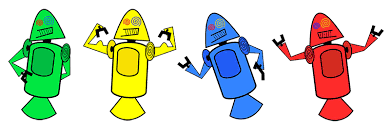

HISTÓRIA DO MASCOTE DO ANDROID
Provavelmente você sabe que o sistema operacional Android, mantido pelo Gogle é um dos mais utilizados para dispositivos móveis em todo o mundo. Mas talvez você não sabe que o seu simpático mascote tem um nome e uma história muuito curiosa? Pois acompanhe esse artigo para a sua eprender muita coisa sobre esse robozinho
PRIMEIRA VERSÃO
A primeira tentativa de criar um mascote surgiu em 2007 e veio de uym desenvolvedor chamado Dan Morril Ele conta que abriu o inkscape (softwarw livre para vetorização de imagens ) e criou sua própria versão de robô. O objetivp eraapenas personalizar o sistema apenas para a sua equipe, não existia nenhuma solicitaçõa da empresa para a criação de um mascote.
Essa é a primeira versão bizarraté foi batizada em homenagem ao seu criador: seriam os Dandrois.
SURGE UM NOVO MASCOTE
A ideia de ter um mascote foi amadurecendo e a missão foi passada para uma proficional da área. A ilustradora Russa Irina Block, também funcionaria do Google, ficou com a missão de representar o pequeno robô de uma maneira mais agradável.
A ideia principal de irina era representar tudo graficamente com poucos traços e de forma mais chapada. O desenho também deveria gerar identifcação rápida com quem o olha. Surgiu então o Bugdroid, o novo mascote do Android.

A primeira inspiração para os traços do novo Bugdroid veo daqueles bonequinhos que ilustram portas de banheiro para indicar o gênero de cada porta. Conta a lenda que a artista estava criando em sua mesa no escritório do Gogle e olhou para o lado dos banheiros e a identificação foi imediata: simples, limpo, objetivo
Então é isso! Espero que você tenha gostado do nosso artigo com essa curiosidade sobre o sistema Android e seu simpatico mascote.